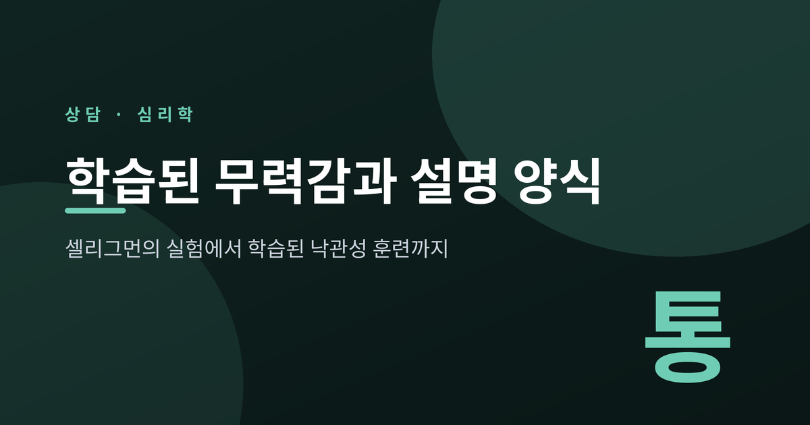
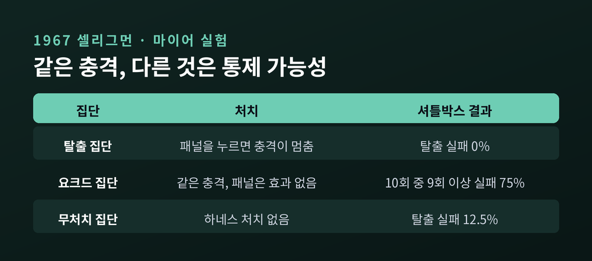
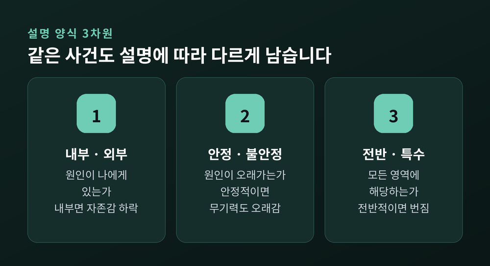
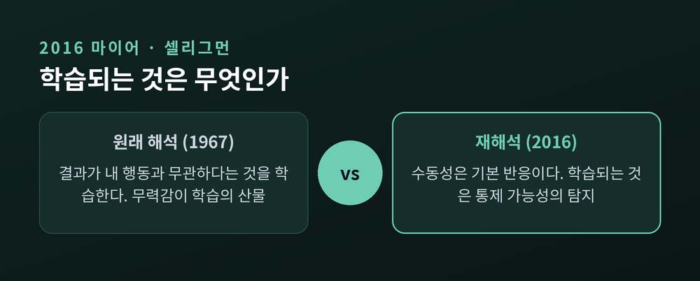
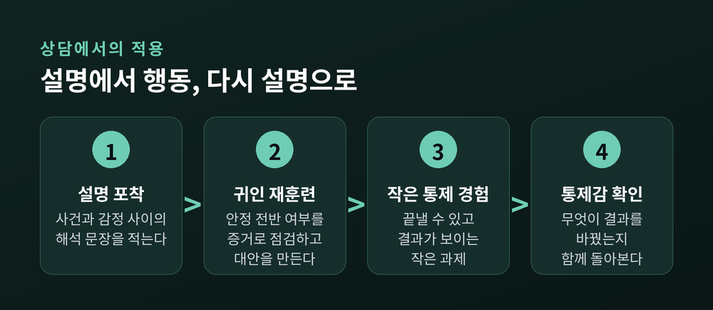
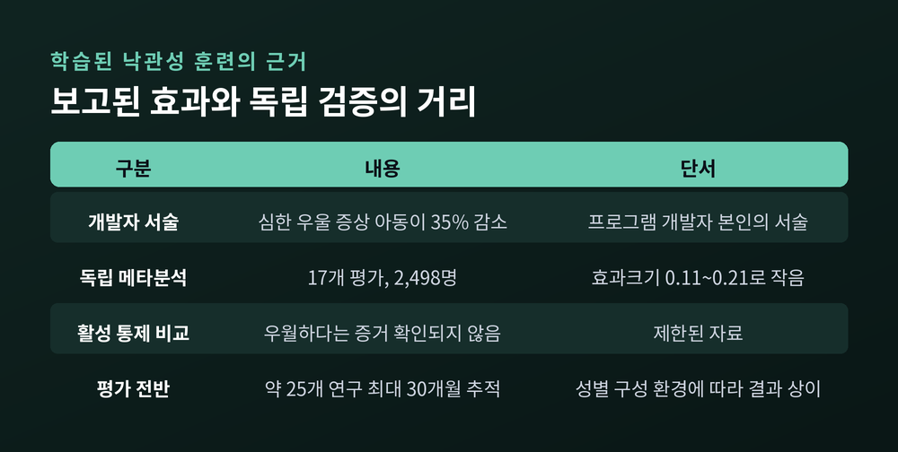

셀리그먼의 실험에서 우울·무기력의 인지 모델, 학습된 낙관성 훈련까지

이번 글에서는 학습된 무력감 이론을 정리해 보겠습니다. 1967년 개 실험에서 시작해, 50년 뒤 저자들이 스스로 이론의 방향을 뒤집은 과정과 설명 양식, 상담 현장의 적용까지 따라가 보려 합니다. 이 글은 교양적 설명이며, 진단이나 치료를 대신하지 않습니다.
먼저 세 줄로 요약합니다.
실험은 단순한 설계였습니다. 실험 경험이 없는 개 24마리를 8마리씩 세 집단으로 나누었습니다.
탈출 집단은 하네스에 묶인 채 머리로 패널을 누르면 충격이 멈췄습니다. 두 번째 집단은 탈출 집단과 똑같은 시간, 똑같은 강도의 충격을 받았지만 패널을 눌러도 소용이 없었습니다. 세 번째 집단은 아무 처치도 받지 않았습니다.
그다음 모두를 셔틀박스에 넣었습니다. 장벽을 넘으면 충격을 피할 수 있는 상자입니다. 결과는 갈렸습니다. 소용없는 충격을 받았던 집단은 75%가 10번의 시행 중 9번 이상 탈출에 실패했습니다. 탈출 집단은 0%, 무처치 집단은 12.5%였습니다.

두 집단이 받은 충격은 물리적으로 같았습니다. 다른 것은 하나, 자기 행동이 결과를 바꿀 수 있었느냐였습니다. 저자들은 개들이 "충격의 종료는 내 반응과 무관하다"는 것을 학습했고, 그 기대가 새 상황에서 행동을 시작할 가능성을 낮춘다고 해석했습니다. 이것이 학습된 무력감입니다.
사람에게서도 비슷한 흔적이 보고되었습니다. 1975년 히로토와 셀리그먼은 학부생 96명을 대상으로, 끌 수 없는 소음이나 풀 수 없는 문제를 먼저 겪게 했습니다. 그러자 이후 철자 바꾸기 문제나 탈출 과제의 수행이 떨어졌습니다. 풀 수 없는 문제가 소음 탈출에까지 영향을 주는 영역 간 전이도 나타났습니다.
같은 해의 다른 연구가 한 가지 숙제를 남겼습니다. 벡 우울척도로 학생 57명을 나눈 밀러와 셀리그먼의 연구입니다. 우울 점수가 낮은 학생은 끌 수 없는 소음 뒤 수행이 나빠졌습니다. 그런데 우울 점수가 높은 학생은 소음이 없는 조건에서도 이미 수행이 낮았고, 소음 뒤에 눈에 띄게 더 나빠지지는 않았습니다. 연구진은 이미 천장에 가까운 상태일 가능성을 생각했습니다.
여기에 또 하나의 문제가 있었습니다. 사람은 통제할 수 없는 일을 겪어도 모두가 무기력해지지는 않습니다. 사람은 일어난 일에 이유를 붙이기 때문입니다. 1978년 에이브럼슨, 셀리그먼, 티즈데일은 이 점을 모형에 넣었습니다.
그들은 먼저 무력감을 둘로 나누었습니다. "누구도 어쩔 수 없었다"는 보편적 무력감과, "남들은 할 수 있는데 나만 못 한다"는 개인적 무력감입니다. 자존감의 하락은 뒤쪽에서만 예측되었습니다.
그리고 원인을 설명하는 방식을 세 차원으로 정리했습니다.

예를 들어 보겠습니다. 어떤 사람이 중요한 시험에서 떨어졌습니다. "나는 머리가 나쁘다"고 설명하면 내부적이고 안정적이며 전반적입니다. 자존감이 내려가고, 오래 가고, 다른 시험과 다른 영역으로 번질 것이라고 예측됩니다. 반대로 "이번엔 컨디션이 안 좋았고 이 과목은 범위가 까다로웠다"고 설명하면 외부적이거나 불안정하고 특수합니다. 아픔은 있어도 이번 일에 머뭅니다.
핵심 예측은 이렇습니다. 앞으로의 기대를 정하는 것은 객관적 현실만이 아니라 내가 붙인 설명의 성질이라는 것입니다. 이 설명이 습관이 된 것이 설명 양식이고, 부정적 사건을 영속적이고 광범위한 원인으로 돌리는 양식을 비관적 설명 양식이라 부릅니다. 이 양식은 우울의 위험과 상관이 있다고 보고되어 왔습니다. 측정에는 귀인양식질문지가 쓰입니다.
한 가지 짚어 둡니다. 설명 양식은 우울의 위험과 '상관'이 있다는 이야기이지, 이 양식을 지닌 사람이 우울하다는 뜻이 아닙니다. 설명 양식만으로 누군가를 판단할 수도 없습니다.
50년이 지난 2016년, 마이어와 셀리그먼은 『Psychological Review』에 논문 한 편을 냈습니다. 제목은 「Learned helplessness at fifty」. 여기서 원래 이론이 거꾸로였다고 정리합니다.
충격에 대한 수동성은 학습되는 것이 아니다. 그것은 기본의, 학습되지 않은 반응이다.
쥐 연구에서 드러난 그림은 이렇습니다. 끌 수 없는 충격이 길게 이어지면 뇌간의 등쪽 솔기핵(DRN)에 있는 세로토닌 뉴런이 활성화됩니다. 이 활성이 능동적인 탈출 행동을 억제하고, 편도체에서는 공포와 불안을 키웁니다. 이 활성을 막으면 수동적 반응이 나타나지 않았습니다.
그렇다면 학습되는 것은 무엇일까요. 전전두피질의 한 회로가 '내가 할 수 있는 일이 있다'는 통제 가능성을 탐지하고, 그 신호가 솔기핵의 활성을 눌러 줍니다. 저자들은 이렇게 적었습니다. 이후의 수동성을 막는 것은 실제로 바퀴를 돌려 충격에서 벗어나는 일이 아니라, 탈출 가능성을 탐지하는 일이라고요. 탐지 회로를 꺼 두면 탈출에 성공한 쥐도 수동적으로 변했습니다.
면역 효과도 보고됩니다. 먼저 통제 가능한 충격을 겪은 쥐는 나중에 통제할 수 없는 충격을 만나도 수동성이 덜했습니다. 회로가 '통제할 수 있을 것'이라고 기대하게 바뀐 것이라는 설명입니다.

수동성이 기본값이라는 해석에는 진화적 논리도 붙습니다. 처음에는 능동적으로 시도하되, 실패하면 멈추고 에너지를 아끼는 편이 적응적이었을 수 있다는 것입니다. 무기력은 고장이 아니라 기본 설정에 가까운 셈입니다.
다만 이 결과를 사람에게 곧바로 옮기기는 어렵습니다. 저자들도 한계를 적었습니다. 사람에게서 대응하는 신경 기전은 입증되지 않았습니다. 이 회로의 뉴런은 피질 세포 중 극히 일부라 뇌영상으로 잡히기 어렵습니다. 실험도 혐오 자극 상황에 한정되어, 풀 수 없는 인지 문제 같은 상황은 다루지 않았습니다. 인지행동치료가 비슷한 경로로 작동할 것이라는 이야기도 어디까지나 저자들의 추측입니다.
위의 이야기를 상담에 그대로 옮기면 안 되지만, 방향을 잡는 지도로는 쓸 수 있습니다. 일반화된 장면으로 설명해 보겠습니다.
어떤 내담자가 몇 차례 구직에 실패한 뒤 "나는 뭘 해도 안 되는 사람"이라고 말합니다. 연락도 줄고 지원도 멈춥니다. 상담에서는 대체로 세 갈래의 작업이 겹쳐집니다.

첫째는 설명을 포착하는 일입니다. 사건이 일어났을 때 머릿속에서 지나간 문장을 적어 봅니다. 셀리그먼의 ABC 모형으로 말하면 역경(A)과 결과(C) 사이에 낀 해석(B)을 보는 것입니다. 무엇이 감정을 만들었는지 사건이 아니라 해석에서 찾아봅니다.
둘째는 귀인을 다시 짜 보는 일입니다. "나는 뭘 해도 안 된다"를 세 차원으로 살펴봅니다. 정말 안정적인가. 정말 모든 영역에 해당하는가. 지난달 서류와 이번 달 서류가 같은 조건이었는가. 대안 설명을 함께 만들어 보고, 가장 나쁜 결말만 떠올리는 습관을 줄입니다. 이 과정은 긍정적으로 생각하자는 권유가 아닙니다. 증거를 따라가는 작업입니다.
셋째는 작은 통제 경험을 쌓는 일입니다. 2016년 연구가 시사하는 지점이 여기입니다. 중요한 것은 실제로 큰 문제를 해결하는 것보다 '내 행동이 결과를 바꾼다'는 신호를 탐지하는 것일 수 있다는 점이었습니다. 그래서 상담에서는 하루 한 통의 지원서처럼, 끝낼 수 있고 결과가 보이는 작은 과제를 먼저 정합니다. 행동활성화와 닿아 있는 부분이지만 초점은 다릅니다. 행동활성화가 회피의 고리를 끊고 가치 있는 활동을 늘리는 데 있다면, 여기서의 질문은 "이 행동이 결과를 바꾸었다는 경험을 어떻게 만들 것인가"입니다. 또한 통제 가능한 영역과 그렇지 않은 영역을 나누어 보는 일도 포함됩니다. 모든 것이 내 책임이라는 생각도, 아무것도 내 몫이 아니라는 생각도 정확하지 않기 때문입니다.
이 순서는 정해진 공식이 아닙니다. 사람에 따라 행동이 먼저일 수도, 설명이 먼저일 수도 있습니다. 상담자가 아니라 내담자의 속도가 기준입니다.
설명 양식을 바꾸는 훈련은 셀리그먼이 '학습된 낙관성'이라 불렀고, 대표 프로그램이 펜 회복탄력성 프로그램(PRP)입니다. 이 프로그램은 아이들에게 자동적 사고를 포착하고, 평가하고, 도전하고, 최악의 결말을 줄이는 네 가지 기술을 가르칩니다.
초기 보고에는 큰 효과가 담겨 있습니다. 셀리그먼 본인은 심한 우울 증상을 겪는 아동의 수가 35% 줄었다고 서술했습니다. 그러나 독립적인 메타분석의 그림은 더 담담합니다. 2009년 브룬와서 등은 17개 통제 평가, 청소년 2,498명을 분석했습니다. 우울 증상은 통제 집단보다 적었고 12개월까지 유지되었지만, 효과크기는 0.11에서 0.21로 작았습니다. 게다가 다른 활성 프로그램보다 우월하다는 증거는 제한된 자료로는 확인되지 않았습니다.

두 숫자의 거리는 곱씹을 만합니다. 프로그램의 개발자가 말하는 효과와 독립 검증이 보여주는 효과는 같지 않을 수 있습니다. 펜 프로그램의 평가들은 성별 구성, 사회경제적 지위, 실행 환경에 따라 결과가 달랐고, 일부는 소규모 연구와 미출판 학위논문이었습니다. 낙관성 훈련은 우울을 예방하는 데 보탬이 될 수 있는 도구이지, 만능 해법은 아닙니다.
정리하면 이렇습니다. 학습된 무력감 연구는 무기력을 성격의 결함이 아니라 통제를 경험하지 못한 상황의 반응으로 읽는 길을 열었습니다. 그리고 50년 뒤 그 저자들은, 우리가 배우는 것은 절망이 아니라 통제의 가능성이라고 방향을 고쳤습니다.
"무기력은 기본값이고, 배워야 하는 것은 통제입니다."
이 문장도 사람에게 확정된 사실은 아니고, 동물 연구에서 나온 잠정적 틀입니다. 그럼에도 한 가지는 일상에서 쓸 만합니다. 아무것도 소용없다는 생각이 들 때, 그 생각을 바로 믿기보다 오늘 끝낼 수 있는 아주 작은 일 하나를 확인해 보시길 권합니다.
무기력한 상태가 오래 이어지거나, 일상과 잠·식욕에 눈에 띄는 변화가 생겼거나, 삶이 견디기 어렵다는 생각이 든다면 혼자 버티지 마시고 정신건강의학과나 심리상담 전문가와 상의하시길 바랍니다. 이 글은 전문 상담을 대신하지 않습니다. 위기 상황이라면 지역의 정신건강 위기 상담 전화나 응급 서비스에 바로 연락하시기 바랍니다.
작은 일 하나가 끝났다는 경험이 다음 하루를 조금 다르게 만들 수도 있습니다.